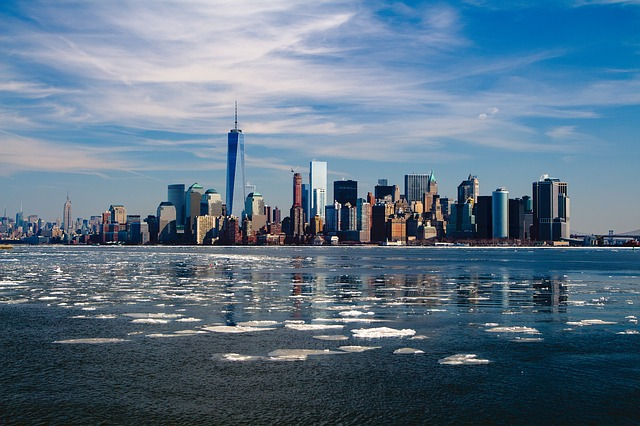

Notícia Cidade
Última entrevista
Felipe Silva: histórias que explicam a cidade
Uma conversa sobre os desafios do dia a dia e as vozes que ajudam a entender as mudanças nos bairros.
Notícias recentes
-
Novas tecnologias
Profissionais de saúde combinam experiência e novos recursos para cuidar dos pacientes. A tecnologia tem ampliado as possibilidades de diagnóstico e tratamento nos hospitais.
-

Novas tecnologias
Táxis continuam essenciais para a mobilidade urbana. Motoristas enfrentam o trânsito das grandes cidades enquanto se adaptam a novas regras e formas de atender os passageiros.
-
Novas tecnologias
Satélites e sensores ajudam pesquisadores a acompanhar mudanças no planeta, reunindo dados sobre o clima, os oceanos e a qualidade do ar.
-

Novas tecnologias
O horizonte urbano reúne áreas residenciais, comércio e grandes edifícios. O crescimento das cidades mantém em pauta o transporte e a qualidade de vida de quem vive nelas.